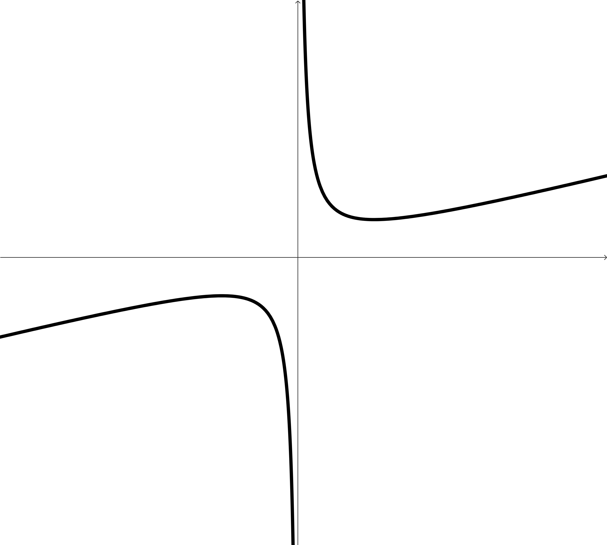
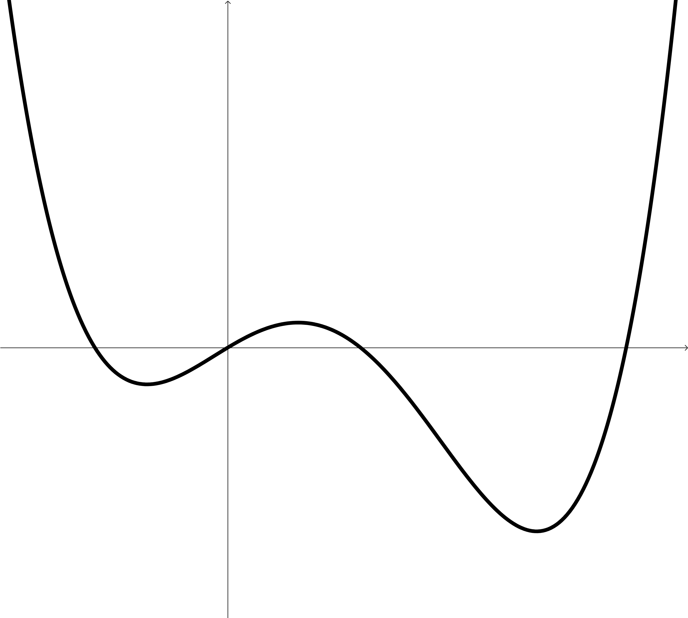
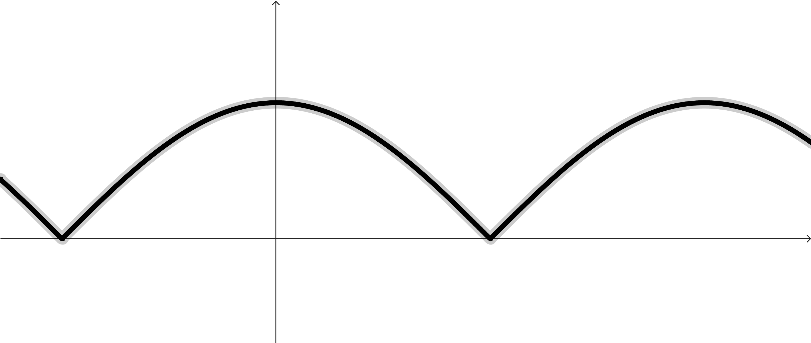
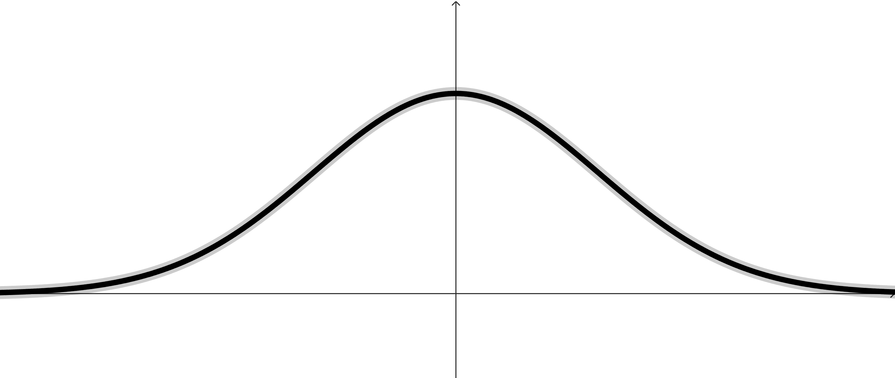
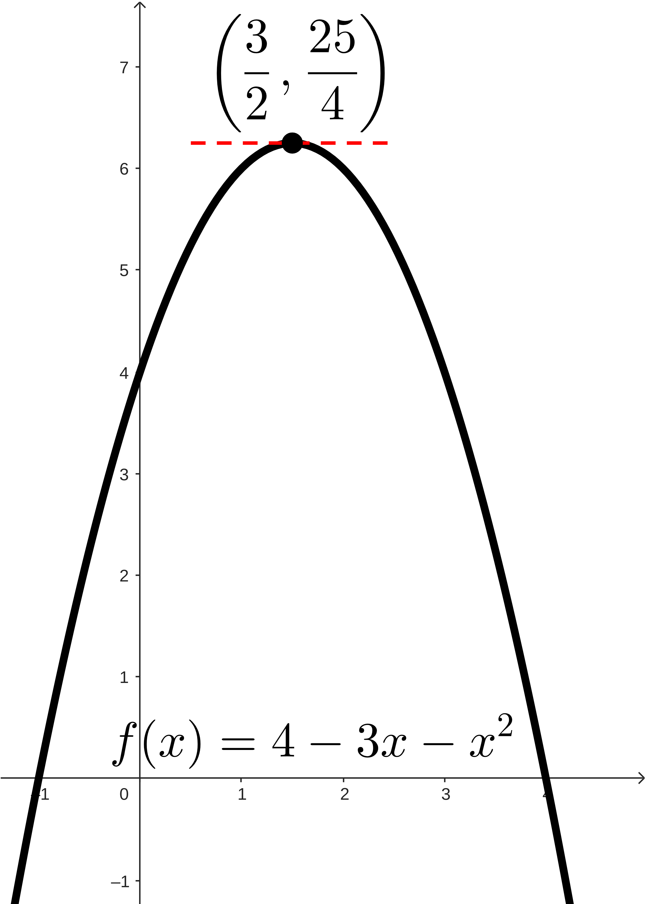
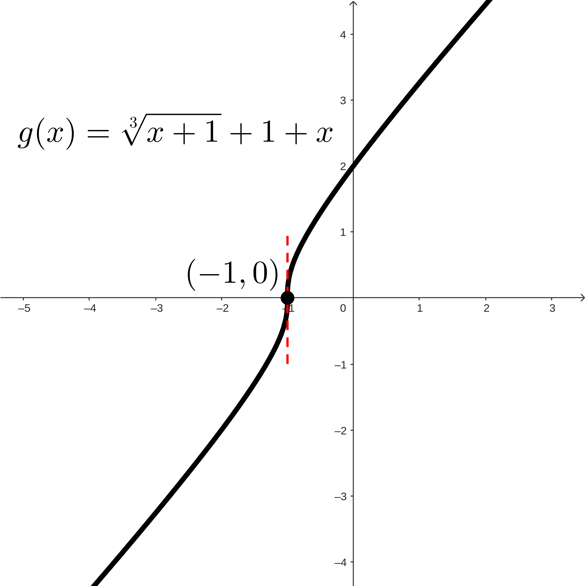
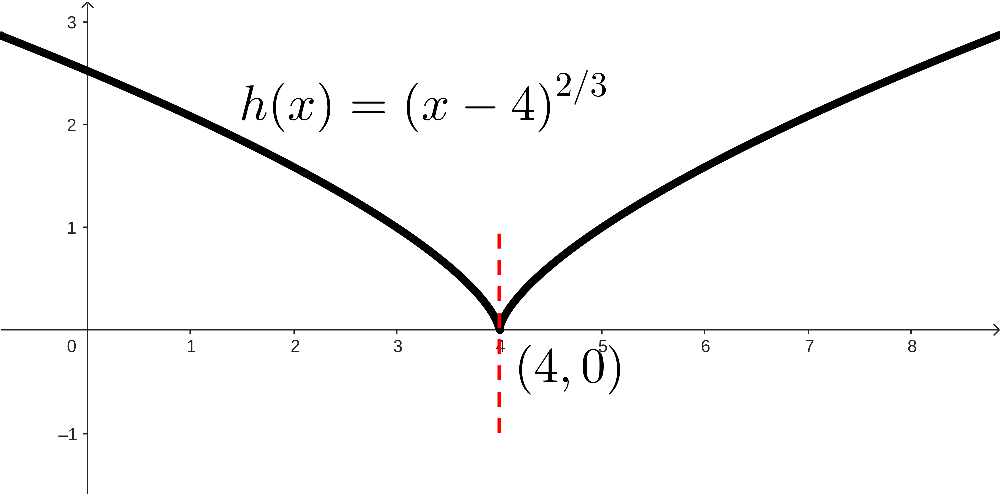
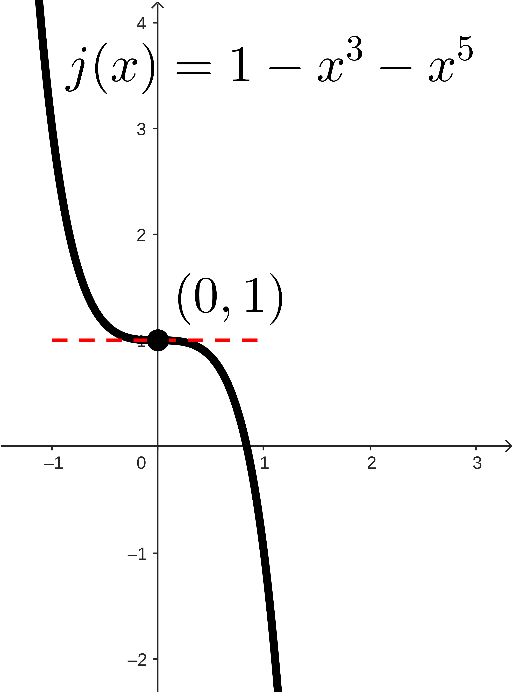

Activity4.2.1.How Should We Think About Direction?
Our goal in this activity is to motivate some new terminology and results that will help us talk about the "direction" of a function and some interesting points on a function (related to the direction of a function). For us to do this, we’ll look at some different examples of functions and try to think about some unifying ideas.




Figure4.2.1.
These examples do not cover all of the possibilities of how a function can act, but will hopefully provide us enough fertile ground to think about some different situations.
(a)
In each graph, find and identify:
The intervals where the function is increasing.
The intervals where the function is decreasing.
The points (or locations) around and between these intervals, the points where the function changes direction or the direction terminates.
(b)
Make a conjecture about the behavior of a function at any point where the function changes direction.
Hint.
What do you think has to be true about the derivative at these points?
(c)
Look at the highest and lowest points on each function. You can even include the points that are highest and lowest just compared to the points around it. Make a conjecture about the behavior of the function at these points.
Hint.
What do you think has to be true about the derivative at these points?
We want to turn this little bit of thinking and exploring into some useful definitions for us. To craft these definitions, we need to start with thinking about what we care about and why we might care about it.
Subsection4.2.1Critical Points, Local Maximums, and Local Minimums
Let’s start by saying what we’re really looking for is the highest and lowest points on a function. These points are interesting, have useful applications, and are difficult to find in general without calculus. We hopefully noticed, though, that these points always end up showing up at the same kinds of locations! They’re points where the direction of a function changes (or terminates).
We also noticed that there are some common characteristics of those points. They’re points where the derivative was either 0 or didn’t exist. So we’ll start by defining these points, and then we’ll define the idea of "highest" and "lowest" points. Then we’ll put together a result that we hopefully noticed here: that the highest and lowest points show up at these points where the derivative is 0 or doesn’t exist.
Definition4.2.2.Critical Point of a Function.
We say that a point \((c, f(c))\) on the graph of \(y=f(x)\) is a critical point of the function \(f\) if \(f'(c)=0\) or \(f'(c)\) doesn’t exist.
If \((c, f(c))\) is a critical point of \(f\text{,}\) then we sometimes will call \(x=c\) a critical number and \(y=f(c)\) a critical value.
So these are the points we will look for to find the "highest" and "lowest" points.
Now we need to define this idea so that we can build the result that tells us how to find these highest and lowest points.
Definition4.2.3.Local Maximum/Minimum.
A point \((c,f(c))\) is a local maximum of \(f(x)\) if there is some open interval of real numbers \((a,b)\) around \(x=c\) (that is, \(a\lt c\lt b\)) and \(f(c)\geq f(x)\) for all \(x\)-values in the intersection of \((a,b)\) and the domain of \(f\text{.}\)
Similarly, a point \((c,f(c))\) is a local minimum of \(f(x)\) if there is some open interval of real numbers \((a,b)\) around \(x=c\) (that is, \(a\lt c\lt b\)) and \(f(c)\leq f(x)\) for all \(x\)-values in the intersection of \((a,b)\) and the domain of \(f\text{.}\)
These are really just slightly technical ways of saying that \(f(c)\) is either the highest or lowest \(y\)-value produced by the function \(f\) for the \(x\)-values near \(x=c\text{.}\)
Now we want to build the connection between these points. In Activity 4.2.1, we pointed out that the highest and lowest points on a function all had the common theme of showing up at places where the derivative was 0 or didn’t exist.
Theorem4.2.4.Every Local Maximum/Minimum Occurs at a Critical Point.
Every local maximum or local minimum of \(f\) occurs at a critical point of \(f\text{.}\)
Another way of saying this is that if \((c,f(c))\) is a local maximum or local minimum of \(f\text{,}\) then it must also be a critical point of \(f\text{.}\)
WAIT! STOP! Before you move on, let’s make sure we understand what this theorem is saying. Or maybe what this theorem is not saying.
Notice that we are not saying that every critical point is a local maximum or local minimum! This is a classic "every square is a rectangle but not every rectangle is a square" situation.
Every local maximum/minimum occurs at a critical point, but not every critical point is a local maximum/minimum.
Subsection4.2.2Direction of a Function (and Where it Changes)
Let’s build up a way of classifying critical points as local maximums, local minimums, or neither.
Activity4.2.2.Comparing Critical Points.
Let’s think about four different functions:
\(\displaystyle f(x) = 4+3x-x^2\)
\(\displaystyle g(x) = \sqrt[3]{x+1}+1+x\)
\(\displaystyle h(x)=(x-4)^{2/3}\)
\(\displaystyle j(x)=1-x^3-x^5\)
Our goal is to find the critical points on the interval \((-\infty,\infty)\) and then to try to figure out if these critical points are local maximums or local minimums or just points that the function increases or decreases through.
(a)
To start, we’re going to be finding critical points. Without looking at a picture of the graph of the function, find the derivative.
Are there any \(x\)-values (in the domain of the function) where the derivative doesn’t exist? We are normally looking for things like division by 0 here, but we could be finding more than that. Check out When Does a Derivative Not Exist? to remind yourself if needed.
Are there any \(x\)-values (in the domain of the function) where the derivative is 0?
(b)
Now that we have the critical points for the function, let’s think about where the derivative might be positive and negative. These will correspond to the direction of a function, based on Theorem 4.1.2 Sign of the Derivative.
Write out the intervals of \(x\)-values around and between your list of critical points. For each interval, what is the sign of the derivative? What do these signs mean about the direction of your function?
(c)
Without looking at the graph of your function:
What changes about how your function increases up to or decreases down to a critical point based on whether the derivative was 0 or the derivative didn’t exist?
Does your function change direction at a critical point? What will that look like, whether it does or does not change direction?
(d)
Give a basic sketch of your graph. It might be helpful to find the \(y\)-values for any critical points you’ve got. Then you can sketch your function increasing/decreasing in the intervals between these points.
In your sketch, include enough detail to tell whether the derivative is 0 or doesn’t exist at each critical point.
(e)
Compare your sketch to the actual graph of the function (you can find all of the graphs in the hint).
Hint.




Figure4.2.5.
This is great, we have a nice strategy for thinking about critical points!
Something we can notice: in finding these critical points (as well as thinking about the domain of the function), we found all of the locations where the derivative is both not positive and not negative. This is a weird way of saying that all of the intervals in between the critical points we found and any breaks in the domain of the function (like if there were vertical asymptotes or holes or something) are places where the derivative is positive or negative.
Even more exciting: if the derivative function we found is continuous, then the Intermediate Value Theorem says that it will only change signs at these critical points (or places like vertical asymptotes or holes). So this means that we can always construct a little chart or something, think about the \(x\)-values around and at critical points or other breaks in the domain, and then look at what the derivative does as we move through those intervals and \(x\)-values.
This will serve as a nice way of thinking about what’s going on with our functions!
Theorem4.2.6.First Derivative Test.
If \((c,f(c))\) is a critical point of \(f\) and we can evaluate the derivative \(f'\) on either side of this point, then we can use the signs of the first derivative to classify the critical point:
If the sign of \(f'\) changes from positive to negative as \(x\) passes through \(x=c\text{,}\) then \((c,f(c))\) is a local maximum.
If the sign of \(f'\) changes from negative to positive as \(x\) passes through \(x=c\text{,}\) then \((c,f(c))\) is a local minimum.
If the sign of \(f'\) does not change as \(x\) passes through \(x=c\text{,}\) then the function \(f\) increases or decreases (depending on whether \(f'\gt 0\) or \(f'\lt 0\)) through \(x=c\text{.}\)
We will often lay these results out in a chart or table, like the following:
\(x\)
\(c\)
\(f'\)
\(\oplus\)
\(\ominus\)
\(f\)
\(\nearrow\)
\(\searrow\)
local max
\(x\)
\(c\)
\(f'\)
\(\ominus\)
\(\oplus\)
\(f\)
\(\searrow\)
\(\nearrow\)
local min
\(x\)
\(c\)
\(f'\)
\(\oplus\)
\(\oplus\)
\(f\)
\(\nearrow\)
\(\nearrow\)
increasing through
\(x\)
\(c\)
\(f'\)
\(\ominus\)
\(\ominus\)
\(f\)
\(\searrow\)
\(\searrow\)
decreasing through
Subsection4.2.3Using the Graph of the First Derivative
Activity4.2.3.First Derivative Test Graphically.
Let’s focus on looking at a picture of a derivative, \(f'(x)\text{,}\) and trying to collect information about the function \(f(x)\text{.}\) This is what we’ve done already, except that we’ve done it by thinking about the representation of \(f'(x)\) as a function rule written out with algebraic symbols. Here we’ll focus on connecting all of that to the picture of the graphs.
For all of the following questions, refer to the plot below. You can add information with the hints whenever you need to. Don’t reveal the picture of \(f(x)\) until you’re really ready to check what you know.
(a)
Based on the graph of \(f'(x)\text{,}\) estimate the interval(s) of \(x\)-values where \(f(x)\) is increasing.
(b)
Based on the graph of \(f'(x)\text{,}\) estimate the interval(s) of \(x\)-values where \(f(x)\) is decreasing.
(c)
Find the \(x\)-values of the critical points of \(f(x)\text{.}\) Once you’ve estimated these, classify them as local maximums, local minimums, or neither. Explain your reasoning.
(d)
What do you think the graph of \(f(x)\) looks like? Do your best to sketch it or explain it before revealing it!
(e)
Why could we estimate the \(x\)-values of the critical numbers of \(f(x)\text{,}\) but not find the actual coordinates? How come we can’t find the \(y\)-value based on looking at the graph of \(f'(x)\text{?}\)
Reading the graphs of functions is, in general, an important skill. But it’s an especially important idea to be able to read and understand the graph of a function like a derivative and then interpret what we are seeing into some other context.
So for us to really excel here, we’ll want to focus on the fact that a first derivative tells about the slope or direction of a function. Whatever \(y\)-values we find on the graph of a \(f'(x)\) needs to be interpreted as a slope or rate of change of \(f(x)\text{.}\) Then we can string these slopes or rates of changes together to try to think about the behavior of \(f(x)\) by knowing how the \(y\)-values are changing as we move along the curve of \(y=f(x)\text{!}\)
Subsection4.2.4Strange Domains
We’ll look at two more examples, both of them using functions whose domain is not\((-\infty, \infty)\text{.}\)
Find the domain of \(f\text{,}\) the critical points of \(f\text{,}\) and then the intervals where \(f\) is increasing/decreasing. Then, classify any critical points local maximums/minimums if necessary.
Hint1.
\(f'(x) = -\dfrac{6x}{(x-3)^3}\)
Hint2.
The function \(f(x)\) has one critical point at \((0,0)\text{.}\) Why isn’t there a critical point at \(x=3\text{?}\) What is happening there instead?
Hint3.
\(x\)
\((-\infty, 0)\)
\(0\)
\((0,3)\)
\(3\)
\((3,\infty)\)
\(f'\)
\(f\)
Answer.
The domain of \(f(x)\) is \((-\infty, 3)\cup(3,\infty)\) due to the vertical asymptote at \(x=3\text{.}\) The only critical point is at \((0,0)\text{.}\) The table below shows where \(f\) is increasing and decreasing, as well as any local maximums or minimums.
Find the domain of \(g\text{,}\) the critical points of \(g\text{,}\) and then the intervals where \(g\) is increasing/decreasing. Then, classify any critical points local maximums/minimums if necessary.
Hint1.
\(g'(x)=\dfrac{1}{2\sqrt{x}}-1\)
Hint2.
Notice that, by our definition of critical points, both \((0,1)\) and \(\left(\frac{1}{4},\frac{3}{4}\right)\) are critical points.
Hint3.
\(x\)
\(0\)
\(\left(0,\frac{1}{4}\right)\)
\(\frac{1}{4}\)
\(\left(\frac{1}{4},\infty\right)\)
\(g'\)
\(g\)
Answer.
The domain of \(g(x)\) is \([0,\infty)\text{.}\) There are two critical points: one at \((0,1)\) and another at \(\left(\frac{1}{4},\frac{3}{4}\right)\text{.}\) The table below shows where \(g\) is increasing and decreasing, as well as any local maximums or minimums.
\(x\)
\(0\)
\(\left(0,\frac{1}{4}\right)\)
\(\frac{1}{4}\)
\(\left(\frac{1}{4},\infty\right)\)
\(g'\)
DNE
\(\ominus\)
\(0\)
\(\oplus\)
\(g\)
\((0,1)\)
\(\searrow\)
\(\left(\frac{1}{4},\frac{3}{4}\right)\)
\(\nearrow\)
local max
decreasing
local min
increasing
So we have two things to notice:
When we have some gap or missing spot in the domain of a function, that can still divide up the intervals where our function is increasing or decreasing! We should notice, though, that since this isn’t actually a point on the curve of our function, it won’t be a critical point and so we have to interpret it differently: we can’t use the First Derivative Test!
An ending point of an interval is a location where the derivative cannot exist! We could define a one-sided derivative (similar to how we defined one-sided continuity in Definition 1.7.1), but for now we’ll just say that the derivative doesn’t exist, and call those ending points critical points. That means that depending on the direction that a function goes away (or leading up to) that ending point, we can classify it as a local maximum or minimum.
Lastly, just a couple of notes: in these little tables or charts (sometimes called sign charts, since they are showing the signs of the derivative), we’ll use some shorthand notation. In Example 4.2.7, we used "DNE" to mean that a derivative "does not exist" at a point. Similarly, we used \(\va\) to represent the vertical asymptote at that \(x\)-value (so that we didn’t accidentally think it was a local maximum or minimum based on the signs of the derivative around it).
Moving forward, we’ll use this same kind of analysis to think about how the derivative might be changing on these intervals. This rate of change of the slopes, the second derivative, will be a useful tool for gathering more information about how a function might be acting.